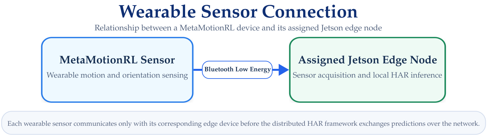
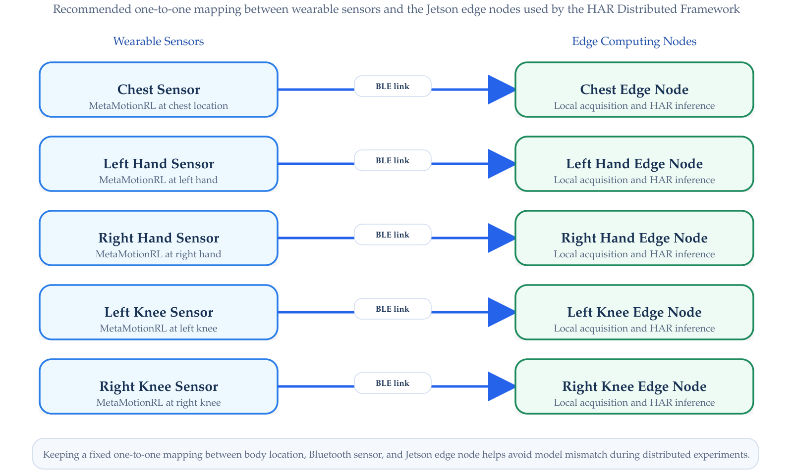

Wearable Sensor Setup
Preparing the MetaMotionRL Devices
The distributed HAR framework uses MbientLab MetaMotionRL r0.5 wearable inertial sensors to acquire body-motion information.
Before deploying the edge inference components, each wearable sensor must be assigned to its corresponding body location and verified from the Jetson device responsible for that sensing stream.
Sensor Configuration
The distributed implementation uses five wearable sensors.
| Sensor ID | Body Location | Associated Edge Node |
|---|---|---|
| Chest | Chest | Chest Node |
| Left Hand | Left hand | Left Hand Node |
| Right Hand | Right hand | Right Hand Node |
| Left Knee | Left knee | Left Knee Node |
| Right Knee | Right knee | Right Knee Node |
Each wearable sensor communicates directly with its assigned Jetson edge node through Bluetooth Low Energy (BLE), as illustrated in Figure 1.

Sensor Modalities
The framework uses inertial and orientation information provided by the MetaMotionRL devices.
The sensor streams used by the HAR implementation include:
Accelerometer
ax, ay, azGyroscope
gx, gy, gzQuaternion Orientation
w, x, y, zDifferent local models use different sensor representations.
The exact signal-to-node configuration is documented under Models & Data.
Sampling
The real-time HAR pipeline operates at a nominal rate of 50 Hz.
Sensor acquisition must therefore provide data at a rate compatible with the input expected by the framework.
Some orientation streams may be generated internally by the sensor at a higher rate and subsequently adapted to the effective rate used by the HAR pipeline.
The exact preprocessing and model input configuration are documented under Models & Data.
Assigning Sensors to Edge Nodes
The one-to-one mapping between wearable sensing locations and edge computing nodes is summarized in Figure 2.

Maintaining a fixed mapping avoids loading a sensor stream into the wrong local model.
The body location assigned to a sensor must remain consistent with the local model deployed on its corresponding edge node.
BLE Connectivity
Before starting the HAR framework, verify that each Jetson can detect and communicate with its assigned MetaMotionRL device.
The Bluetooth interface available on the Jetson can be checked using:
bluetoothctlInside the Bluetooth control interface, nearby devices can be scanned using:
scan onAfter identifying the expected MetaMotionRL device, stop scanning with:
scan offThe exact BLE connection and sensor streaming procedure used by the HAR acquisition software is handled by the corresponding edge-node implementation.
Sensor Identification
Because multiple identical wearable sensors may be active simultaneously, each device should be identifiable before an experiment begins.
A recommended deployment practice is to maintain a mapping between:
- physical sensor;
- Bluetooth address;
- body location; and
- Jetson edge node.
For example:
| Body Location | Bluetooth Address | Edge Node |
|---|---|---|
| Chest | <MAC_ADDRESS> |
Chest |
| Left Hand | <MAC_ADDRESS> |
Left Hand |
| Right Hand | <MAC_ADDRESS> |
Right Hand |
| Left Knee | <MAC_ADDRESS> |
Left Knee |
| Right Knee | <MAC_ADDRESS> |
Right Knee |
Replace the placeholders with the addresses assigned to the actual deployment.
Labeling the physical sensors according to their assigned body location significantly reduces setup errors during experiments.
Sensor Placement
The sensors should be attached consistently to the body locations used by the trained HAR system:
- Chest
- Left Hand
- Right Hand
- Left Knee
- Right Knee
Placement consistency is important because the local models were developed using data collected from these sensing locations.
The detailed relationship between sensing location, signal type, and local model input is documented under Models & Data.
Pre-Run Verification
Before starting the distributed framework, verify the following for each wearable sensor:
- The sensor is powered and available
- Sufficient battery charge is available
- The expected Bluetooth device is detected
- The sensor is assigned to the correct edge node
- The sensor is placed at the correct body location
- The edge acquisition software can receive sensor data
A useful preparation checklist is:
Troubleshooting
Sensor Is Not Detected
Check that:
- The MetaMotionRL device is powered
- Bluetooth is enabled on the Jetson
- The sensor is within communication range
- Another device is not maintaining an active BLE connection with the sensor
- The correct Bluetooth interface is being used
Restarting the Bluetooth service may help in some cases:
sudo systemctl restart bluetoothWrong Sensor Connected to an Edge Node
Verify the Bluetooth address associated with the device and compare it with the deployment mapping.
Disconnect the incorrect sensor before restarting the acquisition component.
Sensor Is Connected but No Data Are Received
Verify:
- That the acquisition process is running
- That the correct sensor configuration is being used
- That the requested sensor stream is enabled
- That the BLE connection remains active
Detailed acquisition-code troubleshooting is documented later under Edge Nodes.
Setup Complete
At this point, the basic system infrastructure should be ready:
The remaining documentation describes how the HAR software itself is implemented and deployed.
Next Step
Continue with the Framework section.
The first implementation page describes the Edge Nodes, including sensor acquisition, local inference, model loading, probability generation, and communication with the central node.